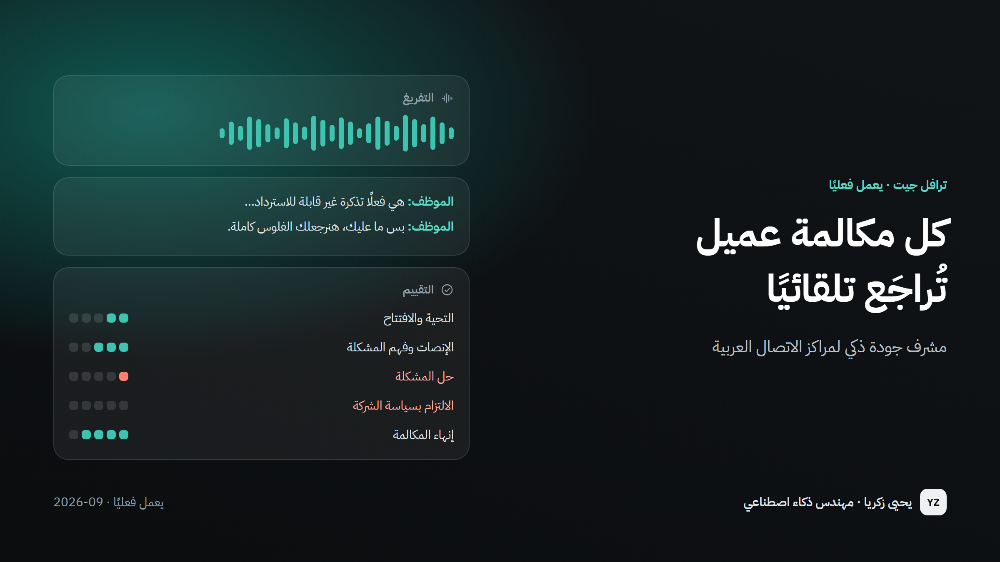

كل مكالمة عميل تُراجَع تلقائيًا
مشرف جودة ذكي لمراكز الاتصال العربية — يسمع كل مكالمة ويقيّمها حسب معاييرك ويعرض الدليل.
2% ← 100%
من المكالمات تُراجَع
قبل ← بعد
830+
مكالمة فُرّغت فعليًا
1,790
مكالمة ومحادثة في مكان واحد
أقل من سنت
تكلفة تحليل المحادثة الواحدة
حوالي 0.008 دولار